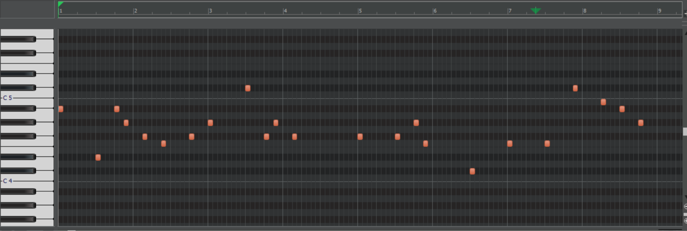

Let’s build a tiny loop. Keep it short and fun: chords, melody, drums, then a quick mix. You can always expand it later.

Steps
- Pick a tempo and key that feels comfortable.
- Write 4 chords and loop them.
- Add a simple melody using the chord notes.
- Place a basic drum pattern underneath.
- Lower volumes so nothing clips, then export.
Don't worry if it sounds messy, that's pretty normal. Just keep playing around with it and try to find something you like!.